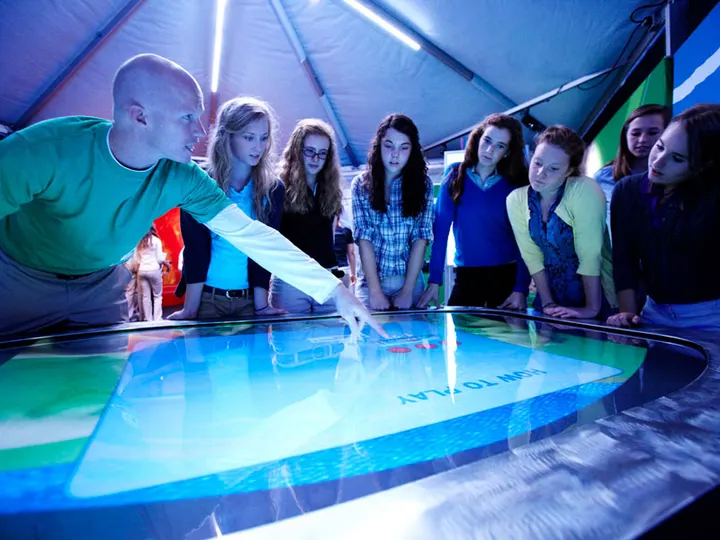
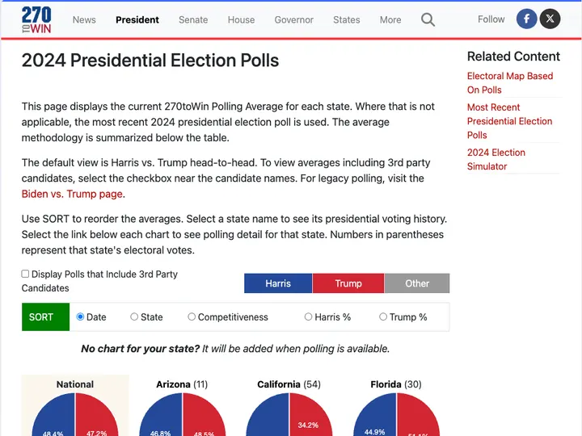
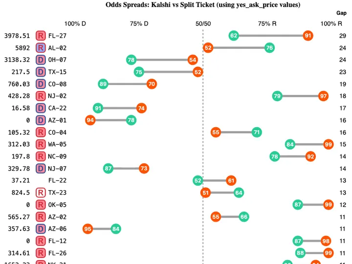
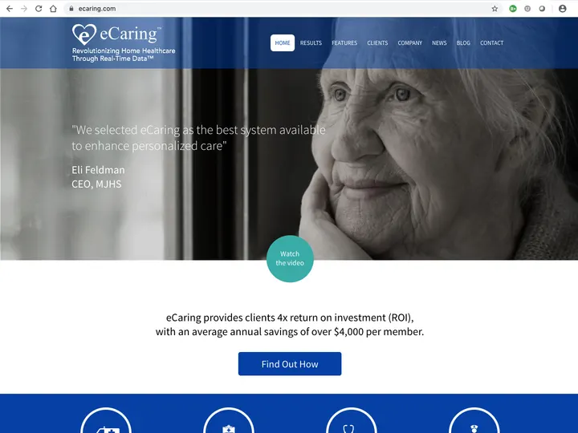
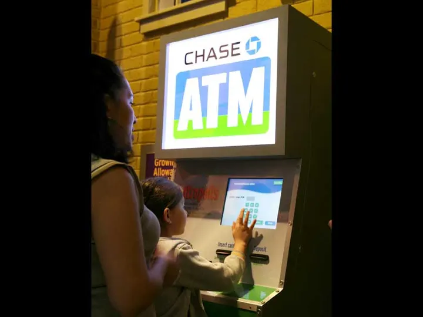
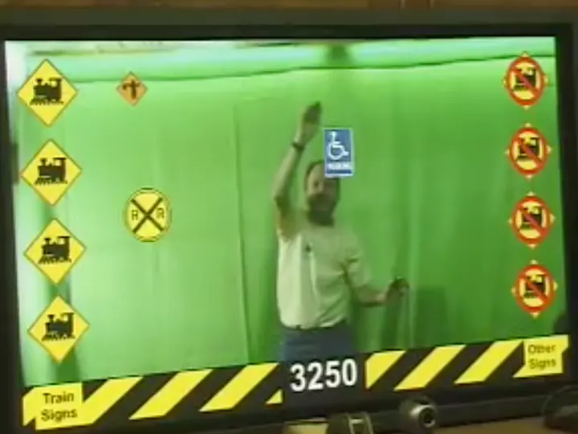
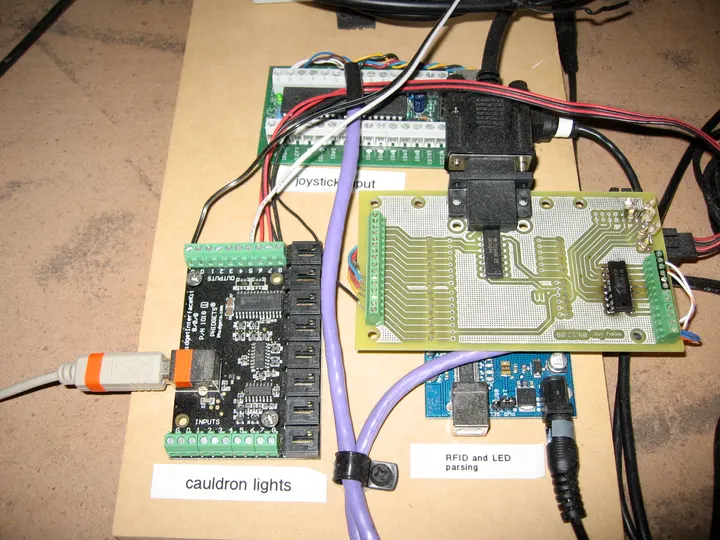
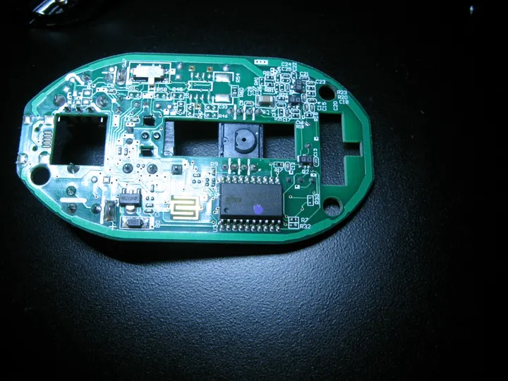
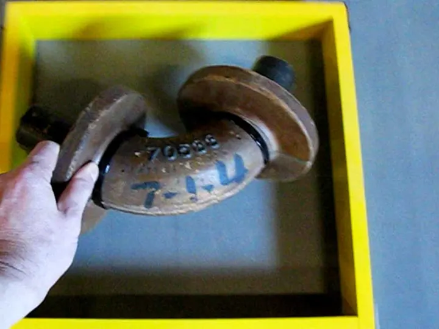

Web apps & data viz
Interactive maps, dashboards and tools that turn live data into something people can explore.
Triggerfish Interactive designs and builds data-rich web applications, content-managed websites and hands-on interactive experiences. Small senior team, big-league clients, building for the web since 1999.



Trusted by publishers, museums & growing companies
Interactive maps, dashboards and tools that turn live data into something people can explore.
Fast, accessible sites on a CMS your team can actually run — custom block themes, not templates.
Touch tables, kiosks, RFID and motion games for museums and brand experiences — hardware included.
Updates, monitoring, analytics and Google Workspace admin, so your site keeps working after launch.
For the 2026 cycle we brought real-time prediction-market data from Kalshi onto 270toWin — alongside the interactive maps and polling tools its readers rely on.




Case studyA complete digital presence for a home-healthcare platform.

ATMs and accounts across 42 networked exhibit computers.
Touch tables and custom interactives that travel in a truck.

Real-time filtering across a wall of every available phone.

Show pages, episode players and editorial rails for original series.

Full-body, camera-tracked gameplay for rail-safety education.
Most web shops stop at the browser. We’ve wired RFID readers into steel-mill exhibits, built touch tables that tour the country, and then written the CMS that keeps it all up to date.
That end-to-end experience makes us calm in complicated projects: messy data, third-party APIs, legacy systems or physical hardware. You get one accountable team from the first sketch to long after launch.



Every engagement follows the same simple rhythm, sized to your project.
We learn your audience, goals and constraints, then agree on scope, budget and what success looks like.
Sitemaps, wireframes and visual design you can click through — before a line of production code.
Clean, tested code shipped in short cycles to a staging site, so you see progress every week.
Smooth launch, training for your team, then hosting, updates and improvements as you grow.
Whether it’s a new website, a data-heavy web app or something people can touch, we’d love to hear about it. We reply within two working days.